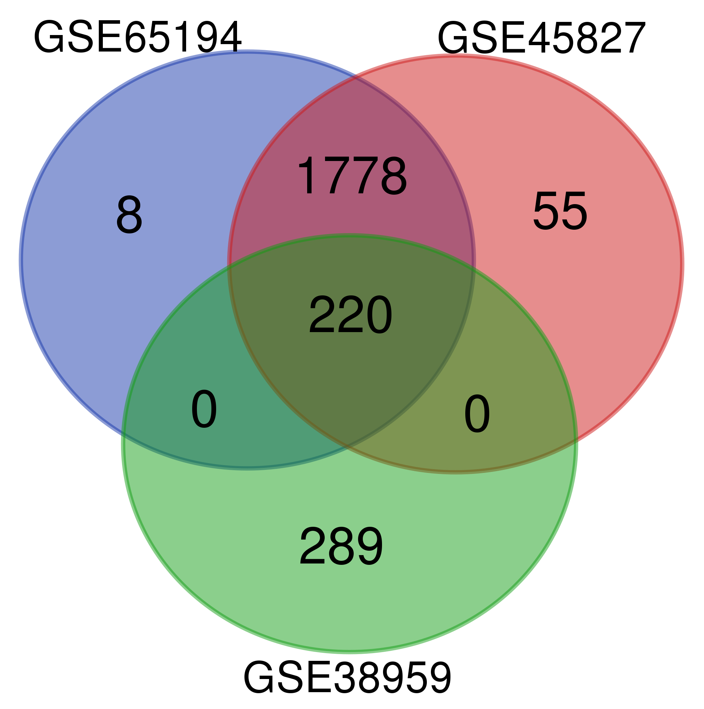
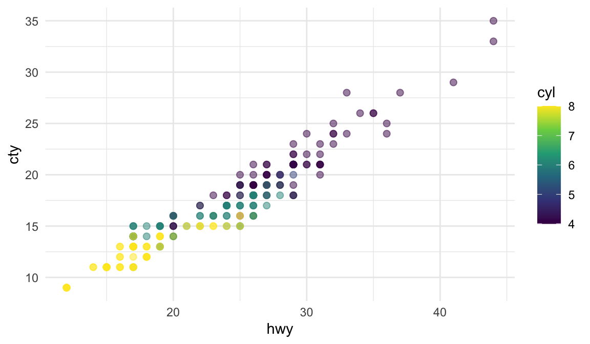

:::{.column-page}

:::14 图片设置
14.1 插入图片的设置
图片可以通过复制粘贴直接插入，Quarto定义图像的基本语法是：
{#fig-elephant width="290"}。
其中，方括号内的是对象的caption（可选），小括号内是图像所在目录，“{}”内的内容是图像的label以及其他可选设置，各参数间用空格进行分割。常用的图像设置如下：
width和height：图像的宽、高。默认单位为像素。fig-align：图片的对齐方式，如”left”，“right”。可以在小括号内添加超链接，如
[](https://en.wikipedia.org/wiki/Elephant)，当点击该图像时会跳转该网站。caption和label的设置会使该图像能够被交叉引用（详见 Chapter 15 ）。-
.column-page：让图片以整个文档的宽度展示。需要首先建立一个Pandoc Div块（Figure 14.1）。然后在Pandoc Div块的参数项内填上{.column-page}。如下所示：这样这张图片就会以文档最大宽度显示：
-
.column-screen：让图片占满整个网页的宽度。应用于代码块时为：#| column: screen。
-
column-screen-inset-shaded：让图片以整个文档的宽度展示，但是在后方加上一个网页宽度的阴影。应用于代码块时为：#| column: screen-inset-shaded。
组图的设置
要容纳和排版组图，需要首先建立一个Pandoc Div块（Figure 14.1）。

Div块的图像排版基本语法如下：

“{}”内为组图的label、排版设置。
在所有图片最后可输入组图的总标题，如上图中的”交叉引用的设置”。
设置图片的排版方式。
layout-ncol和layout-nrow：设置组图的行和列分别排多少张图片。如::: {layout-ncol="2"}。



Layout复杂排版
其基本语法和 Section 14.2.1 一致。不同点在于需要在Div块开头的”{}“内设置，同时layout后要接”=“，并且注意加引号，例如：layout="[[1，1]，[1]]"。通过设置layout可以完成对多图的复杂排版。layout属性是一个二维数组，其中第一维定义行，第二维定义列。layout="[[1，1]，[1]]"表示：创建两行，第一行有两列大小相等的列，第二行只有一列。
组图复杂排版设置
Note
关于图片设置的详细指南，参考：https://quarto.org/docs/authoring/figures.html。
14.2 代码块图片输出设置
对于代码块运行后生成的图片，我们也可以对其进行各种设置以使其在编译后的文档中符合理想的展示要求。基本语法和 Section 14.1 中类似，只不过需要在前面加上”#|”符号，然后将其放置在代码块开头。常用的参数有：
#| lable：图片标签。#| fig-cap：图片标题（caption）。fig-cap和lable共同用于图片的交叉引用，详见 Chapter 15。#| fig-width：图片的宽度。#| fig-height：图片的高度。
其他设置包括#| fig-align、#| fig-cap-location等，见 Chapter 14 。
```{r}
#| eval: true
#| label: fig-散点图
#| fig-cap: "38种流行车型的城市和高速公路里程"
#| fig-width: 6
#| fig-height: 3.5
library(ggplot2)
ggplot(mpg, aes(x = hwy, y = cty, color = cyl)) +
geom_point(alpha = 0.5, size = 2) +
scale_color_viridis_c() +
theme_minimal()
```
代码块组图输出设置
如果一个代码块运行后可以生成多张图像，那么我们也可以和 Section 14.1.1 中一样，对这些图片进行组图排版。常用的参数包括：
layout-ncol和layout-nrow：设置组图的行和列分别排多少张图片。如layout-ncol: "2"。label：组图的标签。fig-cap：每张图的标题。通过”-“符号分别设置。效果如下所示：
```{r}
#| eval: true
#| layout-ncol: 2
#| label: fig-组图输出
#| fig-cap:
#| - "车辆的速度和停车距离"
#| - "汽压与温度的关系"
plot(cars)
plot(pressure)
```

-
fig-subcap：每张图以小标题进行标注，如”(a) sub caption”、“(b) sub caption”。效果如下所示：
```{r}
#| eval: true
#| label: fig-小标题组图输出
#| fig-cap: "小标题组图输出"
#| fig-subcap:
#| - "汽车"
#| - "压力"
#| layout-ncol: 2
plot(cars)
plot(pressure)
```

用layout进行复杂排版
layout属性是一个二维数组，其中第一维定义行，第二维定义列。如layout: "[[1，1]，[1]]表示：创建两行，第一行有两列大小相等的列，第二行只有一列。
```{r}
#| eval: true
#| label: fig-输出复杂排版图片
#| fig-cap: 复杂排版组图输出
#| fig-subcap:
#| - 汽车
#| - 压力
#| - mtcars
#| layout: [[1], [1, 1]]
plot(cars)
plot(pressure)
plot(mtcars)
```


layout后的”[]“中的数字大小表示各个图像的相对大小。所以可以用任何值来自定义：
```{r}
#| eval: true
#| label: fig-输出复杂排版图片2
#| fig-cap: 复杂排版组图输出2
#| fig-subcap:
#| - 汽车
#| - 压力
#| - mtcars
#| layout: [[100], [30, 70]]
plot(cars)
plot(pressure)
plot(mtcars)
```


如果我们输入负数，如下面的”-10”，则会在两个图之间加上相应的间距：
```{r}
#| eval: true
#| label: fig-输出复杂排版图片3
#| fig-cap: 复杂排版组图输出3
#| fig-subcap:
#| - 汽车
#| - 压力
#| - mtcars
#| layout: [[45,-10, 45], [100]]
plot(cars)
plot(pressure)
plot(mtcars)
```